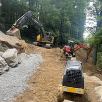
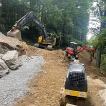

Professional septic system installation, maintenance, and repair services for residential and commercial properties.
Complete septic system services including new installations, repairs, maintenance, and inspections. We work with certified septic designers and provide comprehensive solutions for residential and commercial properties.
We provide septic services throughout Boone, Banner Elk, Blowing Rock, Valle Crucis, Sugar Mountain, and the entire High Country region of North Carolina.
Mountain properties present unique challenges for septic systems including rocky soil, steep terrain, and varying elevation. Our team has extensive experience designing and installing septic systems that work effectively in High Country conditions while meeting all local health department requirements.
 
